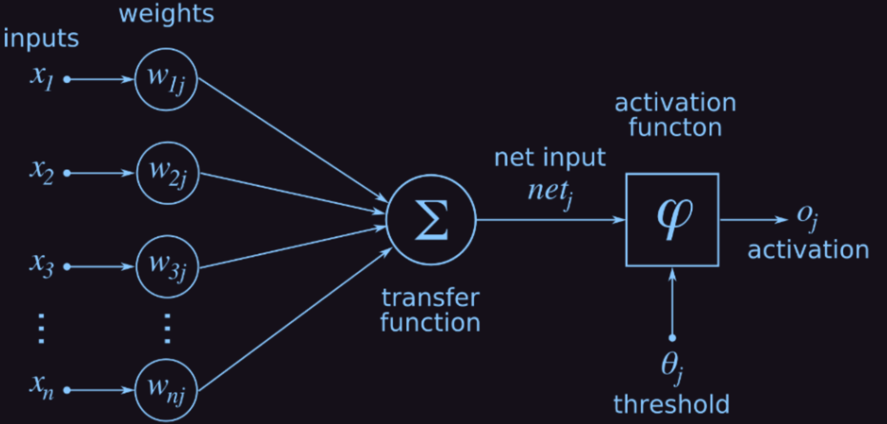

<section id="home" data-background="bg.png">
	<h2 class="head" style="text-align: center;"><b>Inteligencia Artificial</b></h2>
	<p>Redes neuronales artificiales y sus aplicaciones
</p>
</section>
<section id="what-is" data-background="#151019">
	<h3 class="head">¿Inteligencia artificial?</h3>
	<h4 class="comment"># Disciplina científica</h4>
	<h4 class="comment"># Funciones cognitivas de mentes humanas</h4>
	<h4 class="comment"># Aprender y resolver problemas</h4>
</section>
<section id="future" data-background="#151019">
	<h3 class="head">¿Qué hay a futuro?	</h3>
	<h4 class="comment"># Innovación</h4>
	<h4 class="comment"># Avance científico y tecnológico</h4>
	<h4 class="comment"># Utópico</h4>
</section>
<section id="machine-learning" data-background="#151019">
	<h3 class="head">Machine Learning</h3>
	<h4 class="comment"># Máquinas que aprenden</h4>
	<h4 class="comment"># Observación y razonamiento</h4>
	<h4 class="comment"># Asimilación de conocimiento</h4>
</section>
<section id="research" data-background="#151019">
	<h2 class="head">Redes Neuronales Artificiales y su aplicación en clasificación y predicción de resultados.</h2>
</section>
<section id="rna" data-background="#151019">
	<h3 class="head">Red Neuronal Artificial</h3>
	<h4 class="comment"># Neurona</h4>
	<h4 class="comment"># Sinapsis</h4>
	<h4 class="comment"># Perceptron</h4>
	<h4 class="comment"># Optimización</h4>
	<h4 class="comment"># Análogo del cerebro animal</h4>
</section>
<section id="rna" data-background="#151019">
	
</section>
<section id="applications" data-background="#151019">
	<h3 class="head">Aplicaciones</h3>
	<h4 class="comment"># Medicina</h4>
	<h4 class="comment"># Econmía y finanzas</h4>
	<h4 class="comment"># Autonomía</h4>
	<h4 class="comment"># Reconocimiento biométrico</h4>
	<h4 class="comment"># Investigación científica</h4>
</section>
<section id="model" data-background="#151019">
	<h3 class="head">Nuestro modelo</h3>
	<h4 class="comment"># Clasificación</h4>
	<h4 class="comment"># Predicción</h4>
</section>
<section id="mnist" data-background="#151019">
	<h3 class="head">BD de dígitos manuscritos MNIST </h3>
	<h4 class="comment"># Modified National Institute of Standards and Technology</h4>
	<h4 class="comment"># Clasificación</h4>
</section>
